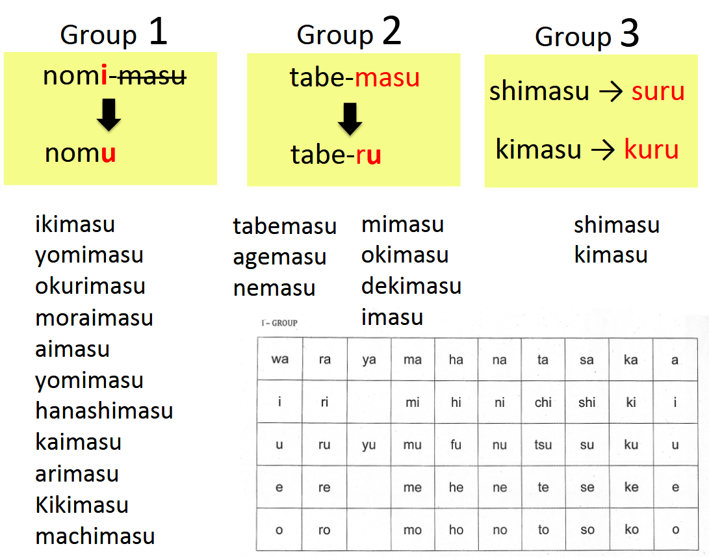
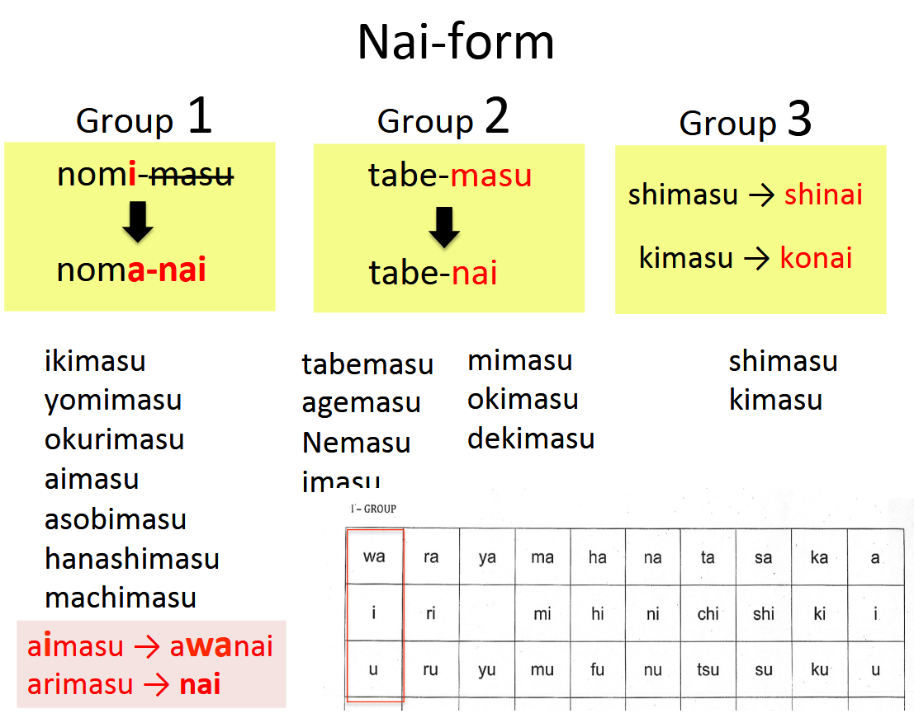
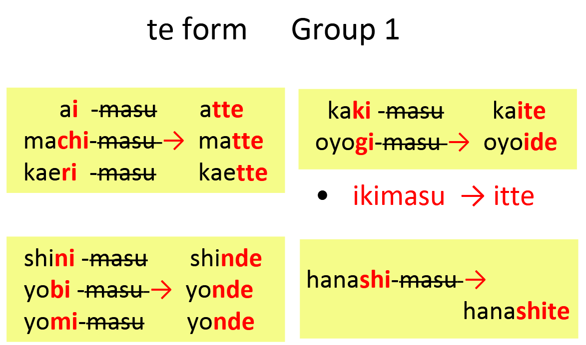

YMCA Grammar Notes
🧩 Level 2 Summary
1. Interrogatives with particles
| Question Word | Affirmative | Negative |
|---|---|---|
| nanika | something | nanimo → nothing |
| dareka | someone | daremo → no one |
| dokoka | somewhere | doko(ni)mo → nowhere |
2. Travel and Movement
[Person] wa [Time] ni [Transport] de [Person] to [Place] ni ikimasu / kimasu / kaerimasu
- Example: Yamada san wa 8-ji ni densha de tomodachi to Tokyo ni ikimasu.
3. General Actions with "de" and "to"
[Person] wa [Time] ni [Place] de [Person] to [Object] o [Verb]
- Verbs: tabemasu, nomimasu, kaimasu, kakimasu, kikimasu, hanashimasu, yomimasu, shimasu
4. Giving and Receiving
[Person] wa [Indirect Object] ni [Direct Object] o [Verb]
- Verbs: kikimasu, oshiemasu, okurimasu, naraimasu, agemasu, kuremasu, moraimasu
5. Existence / Possession
[Person] wa [Thing] ga arimasu / imasu
- Example: Watashi wa ane ga imasu.
Vocabulary: kyoudai, ani, ane, otooto, imooto, jikan, shitsumon, yasumi, kippu
6. Occurrences at Places
[Place] de [Event] ga arimasu
- Example: Gekijou de consaato ga arimasu
Vocabulary: consaato, jishin, jiko
7. Location of Things
[Place] ni [Thing] ga arimasu / imasu
- Example: Kouen ni neko ga imasu
8. Where Things Are
[Thing] wa [Place] ni arimasu / imasu
- Example: Hondana wa heya ni arimasu
9. Verb Classification
| Group | Examples |
|---|---|
| Group 1 | nomimasu → nomu, ikimasu, hanashimasu |
| Group 2 | tabemasu → taberu, nemasu, mimasu |
| Group 3 | shimasu → suru, kimasu → kuru |
10. Inviting or Suggesting
masu-form + masen ka / mashou ka / mashou
- Example: Eiga o mimashou ka?
Answer: Hai, onegaishimasu / Iie, kekkou desu
11. Expressing Wants
masu-form + tai desu
- Example: Sushi o tabetai desu
masu-form + sugimasu
- Example: Tabesugimashita (I ate too much)
masu-form + ni ikimasu / kimasu / kaerimasu
- Example: Hon o kaimasu → Hon o kai ni ikimasu
🧠 Level 3 Summary
📚 Dictionary Form

Used for:
- Looking up verbs
- Casual speech
- Grammar constructions
🔹 Grammar Patterns & Examples
-
koto ga dekimasu (Can do)
- Watashi wa ashita paatii ni iku koto ga dekimasu.
- Anata wa nihongo o hanasu koto ga dekimasu ka?
-
mae ni (Before doing something)
- Shigoto ni iku mae ni shinbun o yomimasu.
- Nihon ni iku mae ni nihongo o benkyou shimashita.
-
tsumori desu (Plan to...)
- Natsuyasumi ni Nihon ni iku tsumori desu.
- Rainen JLPT o ukeru tsumori desu.
-
Noun wa koto desu (Expressing hobbies/dreams)
- Shumi wa shashin o toru koto desu.
- Yume wa sekai isshuu ryokou o suru koto desu.
🙅 Nai-form

Used for:
- Negative requests
- Obligations
- Optional actions
🔹 Grammar Patterns & Examples
-
naide kudasai (Please don’t)
- Koko ni kuruma o tomenaide kudasai.
- Sumimasen, koohii ni satoo o irenaide kudasai.
-
nakereba narimasen (Must / have to)
- Kurasu de nihongo o hanasanakereba narimasen.
- Kyoo uchi ni ika nakereba narimasen.
-
nakutemo ii desu (Don’t have to)
- Isoganakutemo ii desu.
- Shukudai o shinakutemo ii desu yo.
-
nai to ikemasen (Have to / Must Do)
- Hayaku okinai to ikemasen.
-
nai tsumori desu (Plan not to...)
- Kyou wa benkyou shinai tsumori desu.
🔗 Te-form

Used for:
- Requests
- Linking actions
- Ongoing actions and permissions
🔹 Grammar Patterns & Examples
-
te kudasai (Request)
- Chotto matte kudasai.
- Shashin o totte kudasai.
-
te-form, te-form, verb-masu (Sequence)
- Watashi wa maiasa shinbun o yonde, koohii o nomimasu.
- Koko de densha ni notte, tsugi no eki de orimasu.
-
te imasu (Ongoing action/state)
- Tanaka-san wa ima terebi o mite imasu.
- Maiasa jogingu o shite imasu.
- Watashi wa Nihon no kaisha ni tsutomete imasu.
-
te mo ii desu ka (Permission)
- Koko ni suwatte mo ii desu ka?
-
te wa ikemasen (Prohibited action)
- Koko de tabako o sutte wa ikemasen.
🗣 Casual Dictionary-form Examples
- Raamen taberu? → Un, taberu
- Shuumatsu nani o shimasu ka? → Eiga o miru tsumori desu.